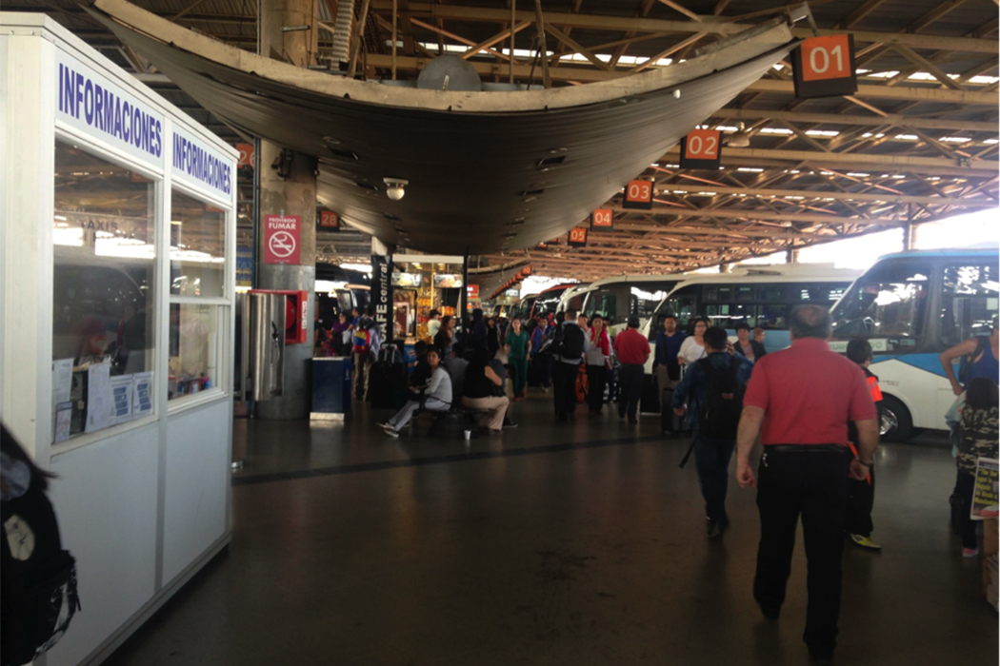

Safe Travel

El proyecto que se presentó fue indagar en una nueva experiencia para viajar en bus, por lo cual trabajé en la parte de investigación y prototipado del MVP (Mínimo producto viable)
Block Quotes


Sobre la investigación
Tras realizar una serie de entrevistas en Terminal San Borja y Terminal Sur, pudimos dar con un patrón que se repetía en la serie de entrevistados: la falta de seguridad durante el viaje, la poca confianza en el servicio de buses y la incertidumbre de contar con un viaje cómodo. Además dentro de lo que se observó en ambos terminales, los pasajeros por lo general estaban nerviosos, ansiosos y preocupados, la falta de información respecto al total de la experiencia de viajar en bus era aquello que los afectaba como usuarios.
Definición de usuario principal
Luego de la investigación se desarrolló un user Persona para tener mayor claridad respecto a como abordábamos la problemática. Se creó a "Alejandra", joven universitaria que se sentía muy insegura a la hora de viajar en bus, ella necesitaba encontrar la información constante del viaje en el bus para sentirse más segura, cómoda y comunicárselo a sus seres queridos. Alejandra representaba a todos aquellas personas que pueden ser menores de edad, adulto mayor o contar con una discapacidad, y que necesitan comunicar y transmitir seguridad al otro que espera por su llegada.
Es por ello que como solución creamos una aplicación que entrega las mejores opciones de acuerdo a las preferencias, manteniendo la confianza antes, durante y después del viaje. Aquí pueden ver el prototipo final.